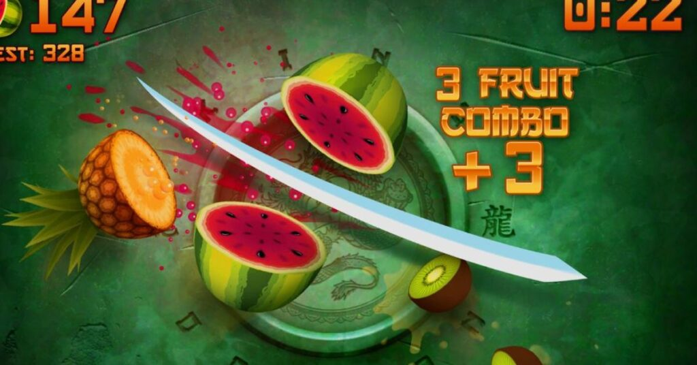

the idea
recreating fruit ninja's tactile slicing mechanic using computer vision. rather than clicking and dragging with a mouse, the player slices through oncoming fruits purely with natural hand slashes captured by a standard 30fps webcam.
how i built it
the pipeline runs frame-by-frame: opencv pulls the video feed, mediapipe hands extracts 21 3D landmark coordinates, and the index fingertip position is translated into in-game slicing vectors inside a pygame loop with custom gravity and fruit physics.
the tricky part
fast hand slashes caused tracking skips between frames, making the blade "jump" past fruits without registering hits. i resolved this by keeping a rolling trail of coordinates and performing continuous line-segment intersection checks against fruit hitboxes instead of static point checks.
what i learned
game feel in gesture input is entirely about forgiveness and latency. small mathematical dampening on landmark jitter and extending the blade hit-window by just 2 frames turned a frustrating experience into something that felt instant and satisfying.